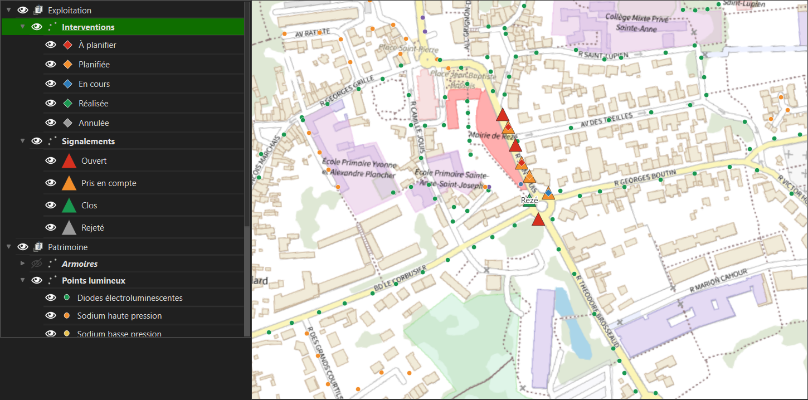
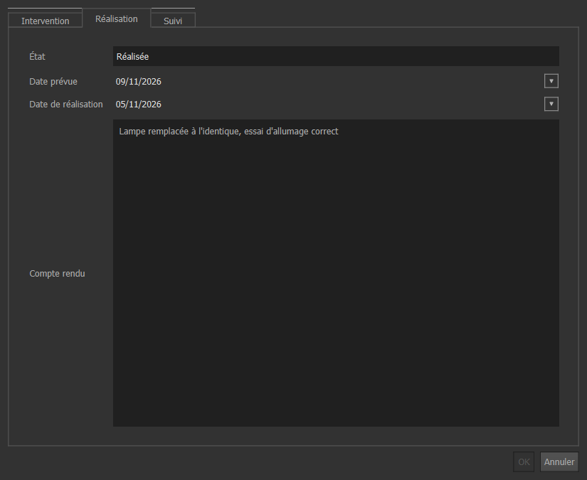

Trouver ses interventions, les faire avancer, déclarer un changement de matériel. Temps de lecture : 5 minutes.
Ce projet QGIS vous montre les communes de votre périmètre et les interventions qui vous sont confiées. Vous tenez à jour leur avancement ; tout le reste est en lecture seule. Vous ne voyez pas les interventions des autres entreprises, et elles ne voient pas les vôtres.
Les exemples viennent de Rezé et Bouguenais, avec le matériel de la donnée ouverte de Nantes Métropole. Les signalements et les interventions sont un jeu d'essai, créé pour tester les fiches.
Double-cliquez sur eclairage_entreprise.qgz, puis choisissez la vue Pannes et interventions dans le menu en forme d'œil au-dessus de la liste des couches.

Pour travailler en liste, cliquez sur la couche Interventions puis ouvrez sa table (F6). Le menu de filtre en bas à gauche propose des filtres enregistrés : « En retard », « À planifier », « En cours », « Réalisées ».
| État voulu | Possible depuis | À remplir |
|---|---|---|
| Planifiée | À planifier, En cours | Date prévue |
| En cours | Planifiée | Rien de plus |
| Réalisée | En cours | Date de réalisation et compte rendu ; le nouveau matériel s'il a changé |
| Annulée | À planifier, Planifiée, En cours | Rien de plus ; expliquez la raison dans le compte rendu |
| À planifier | Planifiée | Rien de plus : le rendez-vous est à refixer |
Une intervention réalisée ou annulée ne bouge plus, pour personne. Si elle a été close par erreur, prévenez l'administrateur : il en crée une nouvelle.

Pour une intervention de nature « Changement de source » ou « Changement de luminaire », un bloc Nouveau matériel apparaît dans l'onglet Réalisation. Le type de source et la puissance sont obligatoires. La température de couleur est à remplir si vous la connaissez.
Quand vous enregistrez l'état « Réalisée », la fiche du point lumineux se met à jour toute seule, avec la date de réalisation comme date de validité du matériel. Le signalement d'origine se clôt en même temps. Vous n'avez rien à ressaisir, et aucun autre fichier à renvoyer.
| Message | Cause | Que faire |
|---|---|---|
| Passage de EN_COURS à A_PLANIFIER interdit | Le passage n'existe pas dans le tableau ci-dessus | Passez par l'état intermédiaire : ici, Planifiée. |
| Une intervention planifiée doit avoir une date prévue | Date prévue vide | Remplissez la date. |
| Une intervention réalisée doit avoir une date et un compte rendu | Date ou compte rendu vide | Remplissez-les. |
| Un changement de matériel doit préciser le point, le nouveau type de source et la nouvelle puissance | Bloc Nouveau matériel incomplet | Remplissez-le ; si le matériel n'a finalement pas changé, demandez à l'administrateur de corriger la nature. |
| Bouton OK grisé | Une case est rouge dans la fiche | Passez la souris sur la case : le motif s'affiche. |
Après un refus, corrigez puis enregistrez de nouveau. Pour tout abandonner, recliquez sur le crayon et choisissez de ne pas enregistrer.